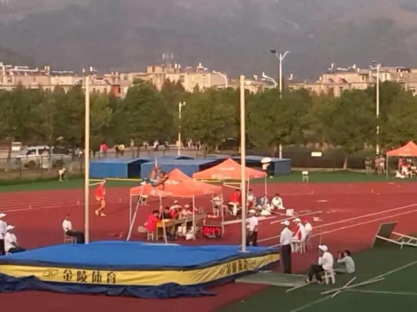
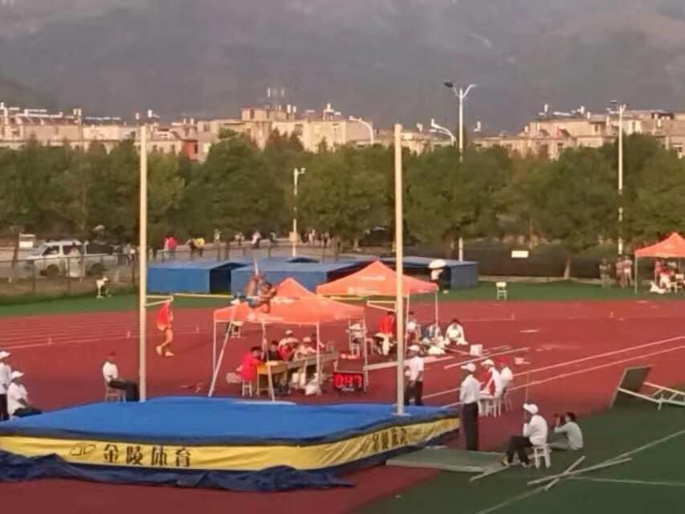
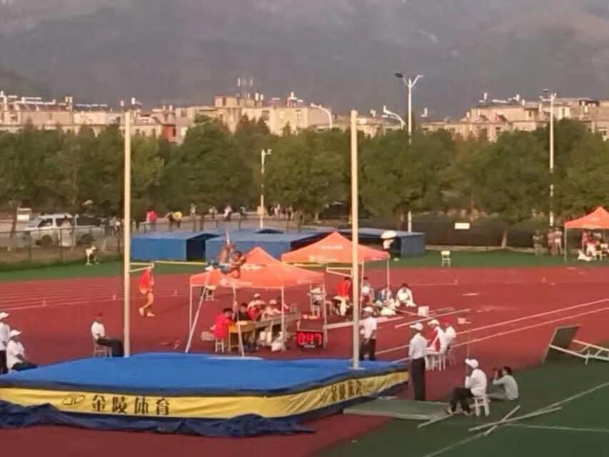

Jan.2023-Dec.2024: University of Nebraska- Lincoln
Master Of Computer Science
Stay tuned for more...
45_1684083936.mp4
Aug.2015-May.2018: University of Nebraska- Lincoln
Bachelor of Computer Science
I had 3.415 GPA. I joined my first-ever standard regional ACM programming contest in St. Joseph (Maybe I spelled it wrongly) Missouri, my team got 3rd place out of 25 teams, I solved 2.5 out of 4 questions.
I attended a lot of Hackathons, MinneHack (U of Minnesota), HackMIT, HackWashU, lots of good memories
When I graduated and started working, I self-taught GRE and got 320 points, 152 and 168, I think, pretty average but I was proud of it.

Aug.2013-May.2015: Anhui Normal University
Software Engineering
I represented AHNU to join the 14th Anhui Sports Game, won 8th place in Pole Vaulting, and won 1 point for my school. My height in the end was 2.9 meters.
In the same summer when I was training for pole vaulting, I was practicing TOEFL test, I


 
